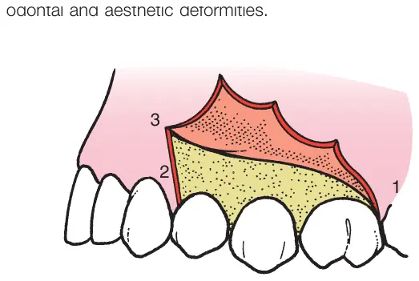
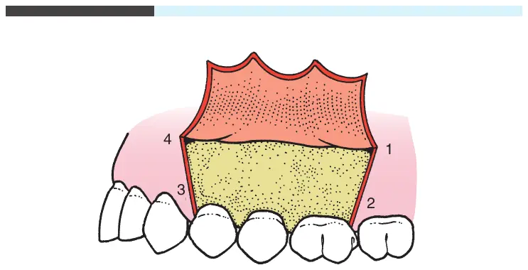

نسخه استخراجشده؛ ترجمه یا تأیید علمی انجام نشده است. وضعیت: captured
در جراحی دهان، فلپ یعنی قطعهای از بافت نرم که: ۱) با یک برش جراحی مرزبندی شده، ۲) خونرسانی خودش را دارد، ۳) دسترسی جراحی به بافت زیرین میدهد، ۴) میتواند به جای اولش برگردد، ۵) با بخیه نگه داشته میشود.

قاعدهی اول طراحی: قاعدهی فلپ معمولاً باید پهنتر از لبهی آزاد باشد تا خونرسانی کافی حفظ شود. هر ناحیهی فلپ باید منبع عروقی بدونوقفه داشته باشد، وگرنه نکروز ایسکمیک کل فلپ یا بخشی از آن رخ میدهد.
اندازهی کافی، چهار دلیل دارد: دید عالی از محل جراحی، جا برای ورود ابزار، نگه داشتن فلپ بیرون از خط دید با رترکتوری که روی استخوان سالم بنشیند، و رفلکشن بهقدری که رترکتور بدون کشش فلپ را نگه دارد.
و یک نکتهی بیولوژیک، برخلاف حدس اولیه: بافت نرم عرضِ برش را التیام میدهد، نه طولِ آن. پس برش بلندِ صاف با رفلکشن کافی، سریعتر از برش کوتاهِ پاره التیام مییابد — دومی بهکندی و با ترمیم ثانویه بسته میشود. برش تیز هم سریعتر از بافت پارهشده التیام مییابد.
اعداد امتداد فلپ پاکتی: در بعد قدامی-خلفی معمولاً دو دندان به جلو و یک دندان به عقب از ناحیهی جراحی. اگر برش رهاساز قدامی برنامهریزی شده باشد، فقط یک دندان به جلو و یک دندان به عقب کافی است.
فلپ کشیدن دندان باید تمامضخامت موکوپریوستئال باشد — یعنی مخاط سطحی، زیرمخاط و پریوست. چهار دلیل:
عدد ۶ تا ۸ میلیمتر را حفظ کن: برشهای مرزی فلپ باید روی استخوانی باشند که بعد از جراحی سالم باقی میماند. اگر ضایعه پلیت باکوکورتیکال را خورده، برش باید دستکم ۶ تا ۸ میلیمتر دورتر از آن روی استخوان سالم باشد. و اگر قرار است روی دندانی استخوان برداشته شود، برش باید آنقدر دور باشد که پس از برداشت استخوان هم ۶ تا ۸ میلیمتر با نقص استخوانی فاصله داشته باشد. خط برشی که استخوان سالم زیرش نباشد، داخل نقص فرو میریزد و به باز شدن زخم و تأخیر التیام میانجامد.
دو ساختار مهمی که میتوانند آسیب ببینند، هر دو در مندیبلاند: عصب لینگوال و عصب منتال.

در ماگزیلا، فلپ بهندرت ساختار حیاتی را به خطر میاندازد. در سطح فاسیال زائدهی آلوئولار ماگزیلا هیچ عصب یا شریانی نیست که احتمال آسیبش باشد. ولی در فلپ پالاتال:
ولی برش رهاساز عمودی در بخش خلفی کام ممنوع است — چون معمولاً شریان پالاتین بزرگ را داخل بافت قطع میکند و خونریزی ضرباندار میدهد که کنترلش سخت است.
قواعد برش رهاساز عمودی:
نوع سؤال: ساخت کلمه · 4 خانه
حروف منبع: م · ل · ا · س